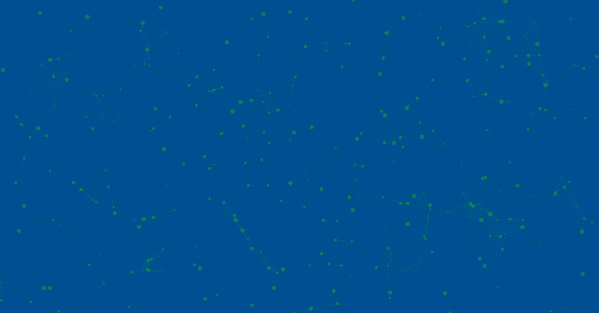
We just heard how complex and expensive lab connectivity still is.
Too many systems. No interfaces. Data islands.
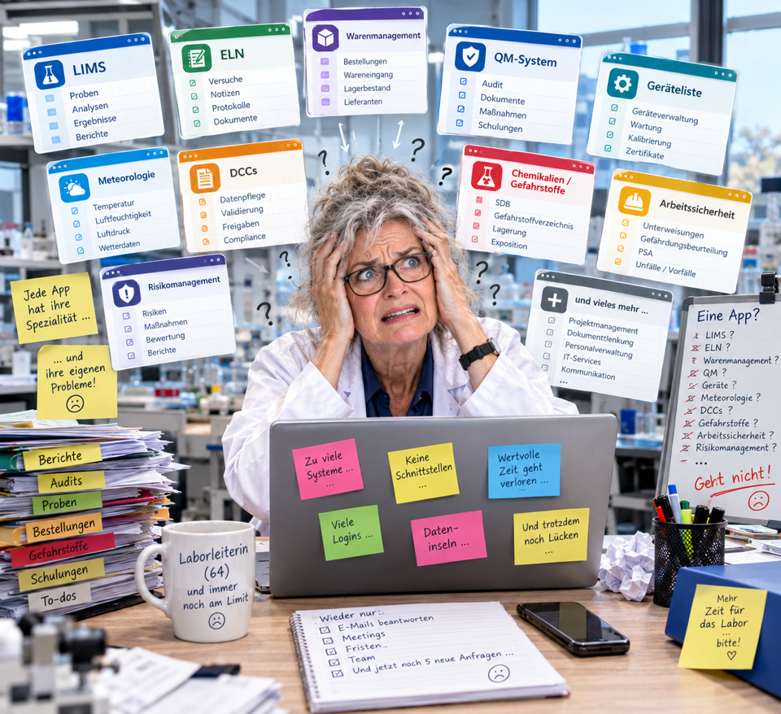
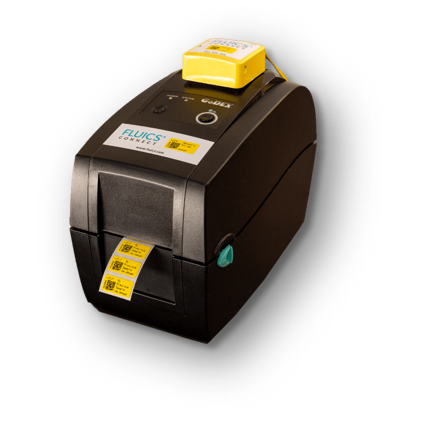
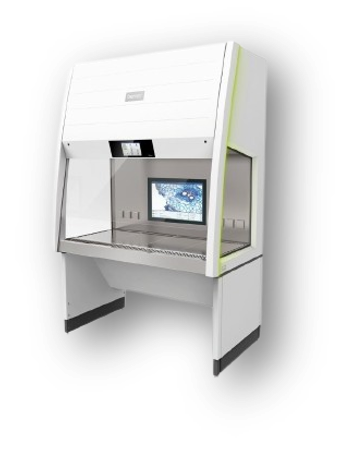
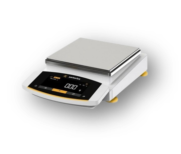
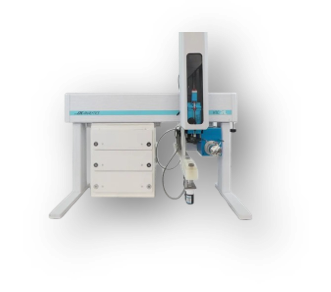
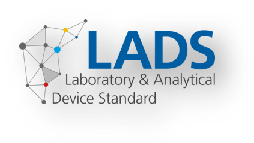
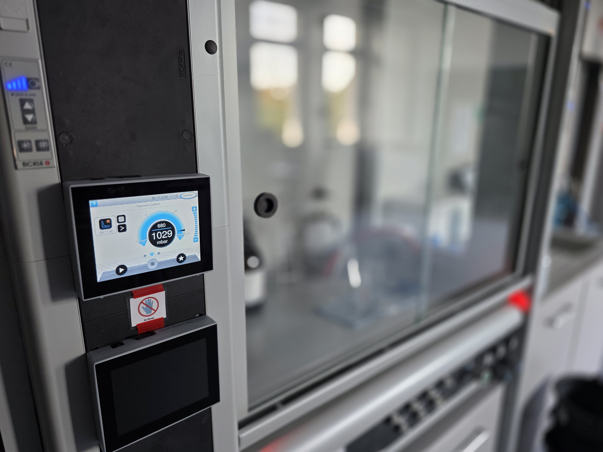
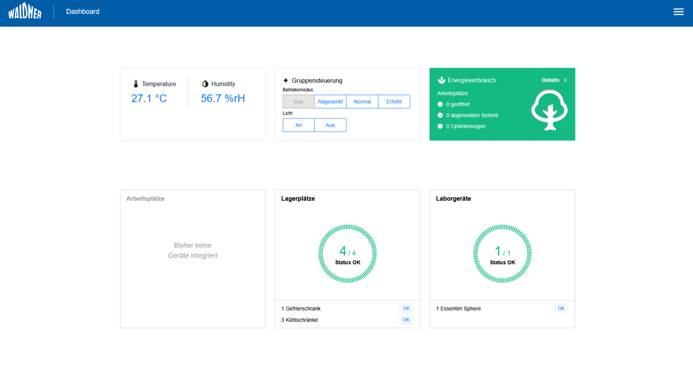
A Vacuubrand vacuum pump with its controller — integrated through LADS (OPC UA) into the Waldner LCC as the higher-level system.
Platzhalter — Inhalt folgt
SPE run with various vacuum programs.
Directly controlled through LADS.
Explorer view of the proxy server — every device connected to the LCC shows up here as a device.
One integration layer in front of everything.
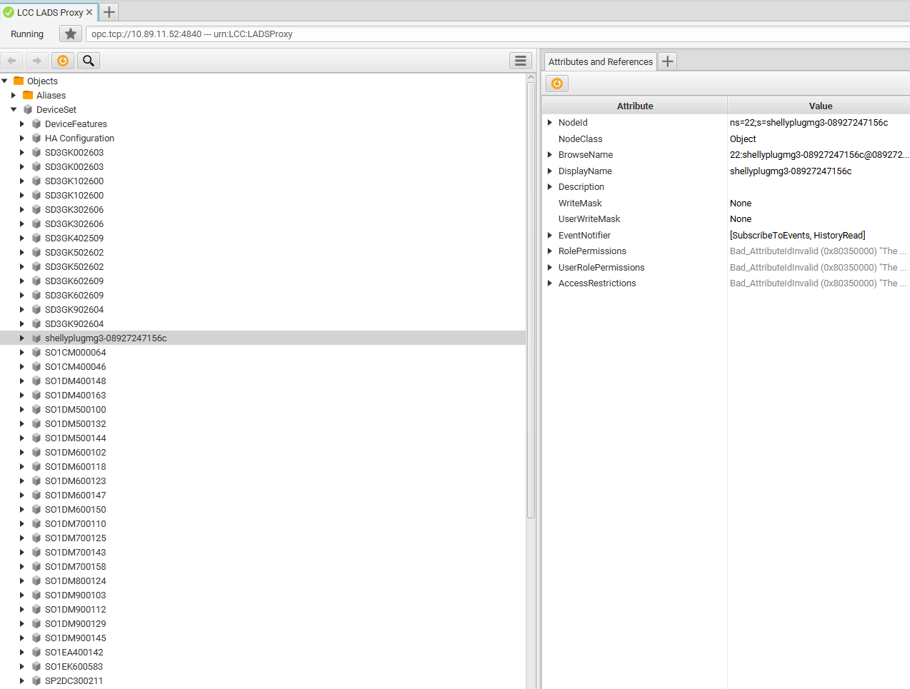
Machine-readable repository of LADS OPC UA specifications, device manuals and integration examples — the structured foundation for automated model generation.
Specialized LLM agents for tutorials, data collection and information-model generation — minimal user interaction, maximum dark processing rate.
Plug-and-play gateway modules (RS232, Modbus, USB, 4G, battery) with automatic detection. Raspberry Pi CM5 as the computing unit.
Automated deployment: AI-generated LADS OPC UA models (XML/JSON) pushed straight to the gateway via Node-RED — no IT specialists, 10× faster than manual integration.
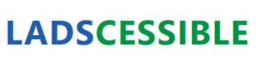
Modular AI Gateway for Brownfield Laboratory Devices
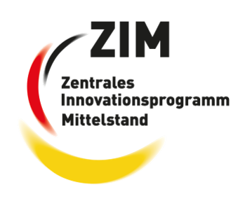
The LADS proxy and its REST API are the foundation — so we build our own tools on top.
No vendor lock-in: the interface is open, anyone can extend it.
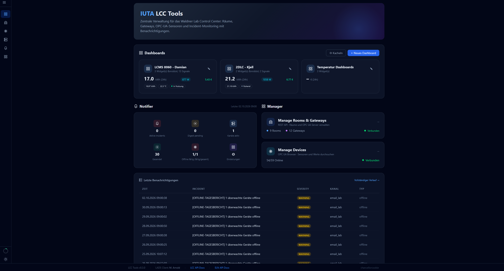
Every connected device reports its power draw at high resolution.
Usage duration, load profile and energy cost — all derived from the same open data stream.
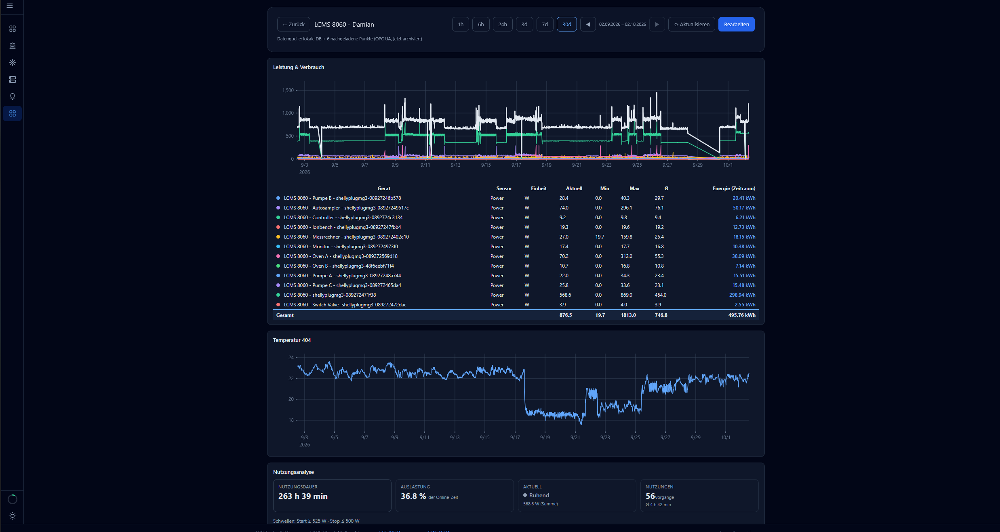
„Entwicklung einer Open-Source-Softwareplattform zur Verarbeitung heterogener Datenströme mittels Vibe-Coding“
Ricardo Cunha
how it's done properly …